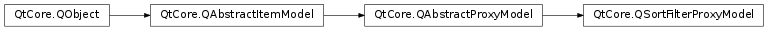

QSortFilterProxyModel¶
Synopsis¶
Functions¶
- def
dynamicSortFilter() - def
filterCaseSensitivity() - def
filterKeyColumn() - def
filterRegExp() - def
filterRole() - def
invalidateFilter() - def
isRecursiveFilteringEnabled() - def
isSortLocaleAware() - def
setDynamicSortFilter(enable) - def
setFilterCaseSensitivity(cs) - def
setFilterKeyColumn(column) - def
setFilterRegExp(regExp) - def
setFilterRole(role) - def
setRecursiveFilteringEnabled(recursive) - def
setSortCaseSensitivity(cs) - def
setSortLocaleAware(on) - def
setSortRole(role) - def
sortCaseSensitivity() - def
sortColumn() - def
sortOrder() - def
sortRole()
Virtual functions¶
- def
filterAcceptsColumn(source_column, source_parent) - def
filterAcceptsRow(source_row, source_parent) - def
lessThan(source_left, source_right)
Slots¶
- def
invalidate() - def
setFilterFixedString(pattern) - def
setFilterRegExp(pattern) - def
setFilterWildcard(pattern)
Detailed Description¶
The
PySide2.QtCore.QSortFilterProxyModelclass provides support for sorting and filtering data passed between another model and a view.
PySide2.QtCore.QSortFilterProxyModelcan be used for sorting items, filtering out items, or both. The model transforms the structure of a source model by mapping the model indexes it supplies to new indexes, corresponding to different locations, for views to use. This approach allows a given source model to be restructured as far as views are concerned without requiring any transformations on the underlying data, and without duplicating the data in memory.Let’s assume that we want to sort and filter the items provided by a custom model. The code to set up the model and the view, without sorting and filtering, would look like this:
treeView = QTreeView() model = MyItemModel(self) treeView.setModel(model)To add sorting and filtering support to
MyItemModel, we need to create aPySide2.QtCore.QSortFilterProxyModel, callPySide2.QtCore.QSortFilterProxyModel.setSourceModel()with theMyItemModelas argument, and install thePySide2.QtCore.QSortFilterProxyModelon the view:treeView = QTreeView() sourceModel = MyItemModel(self) proxyModel = QSortFilterProxyModel(self) proxyModel.setSourceModel(sourceModel) treeView.setModel(proxyModel)At this point, neither sorting nor filtering is enabled; the original data is displayed in the view. Any changes made through the
PySide2.QtCore.QSortFilterProxyModelare applied to the original model.The
PySide2.QtCore.QSortFilterProxyModelacts as a wrapper for the original model. If you need to convert sourcePySide2.QtCore.QModelIndexes to sorted/filtered model indexes or vice versa, usePySide2.QtCore.QSortFilterProxyModel.mapToSource(),PySide2.QtCore.QSortFilterProxyModel.mapFromSource(),PySide2.QtCore.QSortFilterProxyModel.mapSelectionToSource(), andPySide2.QtCore.QSortFilterProxyModel.mapSelectionFromSource().Note
By default, the model dynamically re-sorts and re-filters data whenever the original model changes. This behavior can be changed by setting the
PySide2.QtCore.QSortFilterProxyModel.dynamicSortFilter()property.The Basic Sort/Filter Model and Custom Sort/Filter Model examples illustrate how to use
PySide2.QtCore.QSortFilterProxyModelto perform basic sorting and filtering and how to subclass it to implement custom behavior.
Sorting¶
PySide2.QtWidgets.QTableViewandPySide2.QtWidgets.QTreeViewhave aPySide2.QtWidgets.QTreeView.sortingEnabled()property that controls whether the user can sort the view by clicking the view’s horizontal header. For example:treeView.setSortingEnabled(True)When this feature is on (the default is off), clicking on a header section sorts the items according to that column. By clicking repeatedly, the user can alternate between ascending and descending order.

Behind the scene, the view calls the
PySide2.QtCore.QSortFilterProxyModel.sort()virtual function on the model to reorder the data in the model. To make your data sortable, you can either implementPySide2.QtCore.QSortFilterProxyModel.sort()in your model, or use aPySide2.QtCore.QSortFilterProxyModelto wrap your model –PySide2.QtCore.QSortFilterProxyModelprovides a genericPySide2.QtCore.QSortFilterProxyModel.sort()reimplementation that operates on thePySide2.QtCore.QSortFilterProxyModel.sortRole()(Qt.DisplayRoleby default) of the items and that understands several data types, includingint,PySide2.QtCore.QString, andPySide2.QtCore.QDateTime. For hierarchical models, sorting is applied recursively to all child items. String comparisons are case sensitive by default; this can be changed by setting thePySide2.QtCore.QSortFilterProxyModel.sortCaseSensitivity()property.Custom sorting behavior is achieved by subclassing
PySide2.QtCore.QSortFilterProxyModeland reimplementingPySide2.QtCore.QSortFilterProxyModel.lessThan(), which is used to compare items. For example:bool MySortFilterProxyModel::lessThan(const QModelIndex &left, const QModelIndex &right) const { QVariant leftData = sourceModel()->data(left); QVariant rightData = sourceModel()->data(right); if (leftData.type() == QVariant::DateTime) { return leftData.toDateTime() < rightData.toDateTime(); } else { static QRegExp emailPattern("[\\w\\.]*@[\\w\\.]*)"); QString leftString = leftData.toString(); if(left.column() == 1 && emailPattern.indexIn(leftString) != -1) leftString = emailPattern.cap(1); QString rightString = rightData.toString(); if(right.column() == 1 && emailPattern.indexIn(rightString) != -1) rightString = emailPattern.cap(1); return QString::localeAwareCompare(leftString, rightString) < 0; } }(This code snippet comes from the Custom Sort/Filter Model example.)
An alternative approach to sorting is to disable sorting on the view and to impose a certain order to the user. This is done by explicitly calling
PySide2.QtCore.QSortFilterProxyModel.sort()with the desired column and order as arguments on thePySide2.QtCore.QSortFilterProxyModel(or on the original model if it implementsPySide2.QtCore.QSortFilterProxyModel.sort()). For example:proxyModel.sort(2, Qt.AscendingOrder)
PySide2.QtCore.QSortFilterProxyModelcan be sorted by column -1, in which case it returns to the sort order of the underlying source model.
Filtering¶
In addition to sorting,
PySide2.QtCore.QSortFilterProxyModelcan be used to hide items that do not match a certain filter. The filter is specified using aPySide2.QtCore.QRegExpobject and is applied to thePySide2.QtCore.QSortFilterProxyModel.filterRole()(Qt.DisplayRoleby default) of each item, for a given column. ThePySide2.QtCore.QRegExpobject can be used to match a regular expression, a wildcard pattern, or a fixed string. For example:proxyModel.setFilterRegExp(QRegExp(".png", Qt.CaseInsensitive, QRegExp.FixedString)) proxyModel.setFilterKeyColumn(1)For hierarchical models, the filter is applied recursively to all children. If a parent item doesn’t match the filter, none of its children will be shown.
A common use case is to let the user specify the filter regexp, wildcard pattern, or fixed string in a
PySide2.QtWidgets.QLineEditand to connect thePySide2.QtWidgets.QLineEdit.textChanged()signal toPySide2.QtCore.QSortFilterProxyModel.setFilterRegExp(),PySide2.QtCore.QSortFilterProxyModel.setFilterWildcard(), orPySide2.QtCore.QSortFilterProxyModel.setFilterFixedString()to reapply the filter.Custom filtering behavior can be achieved by reimplementing the
PySide2.QtCore.QSortFilterProxyModel.filterAcceptsRow()andPySide2.QtCore.QSortFilterProxyModel.filterAcceptsColumn()functions. For example (from the Custom Sort/Filter Model example), the following implementation ignores thePySide2.QtCore.QSortFilterProxyModel.filterKeyColumn()property and performs filtering on columns 0, 1, and 2:bool MySortFilterProxyModel::filterAcceptsRow(int sourceRow, const QModelIndex &sourceParent) const { QModelIndex index0 = sourceModel()->index(sourceRow, 0, sourceParent); QModelIndex index1 = sourceModel()->index(sourceRow, 1, sourceParent); QModelIndex index2 = sourceModel()->index(sourceRow, 2, sourceParent); return (sourceModel()->data(index0).toString().contains(filterRegExp()) || sourceModel()->data(index1).toString().contains(filterRegExp())) && dateInRange(sourceModel()->data(index2).toDate()); }(This code snippet comes from the Custom Sort/Filter Model example.)
If you are working with large amounts of filtering and have to invoke
PySide2.QtCore.QSortFilterProxyModel.invalidateFilter()repeatedly, usingreset()may be more efficient, depending on the implementation of your model. However,reset()returns the proxy model to its original state, losing selection information, and will cause the proxy model to be repopulated.
Subclassing¶
Since
PySide2.QtCore.QAbstractProxyModeland its subclasses are derived fromPySide2.QtCore.QAbstractItemModel, much of the same advice about subclassing normal models also applies to proxy models. In addition, it is worth noting that many of the default implementations of functions in this class are written so that they call the equivalent functions in the relevant source model. This simple proxying mechanism may need to be overridden for source models with more complex behavior; for example, if the source model provides a customPySide2.QtCore.QSortFilterProxyModel.hasChildren()implementation, you should also provide one in the proxy model.Note
Some general guidelines for subclassing models are available in the Model Subclassing Reference .
See also
PySide2.QtCore.QAbstractProxyModelPySide2.QtCore.QAbstractItemModelModel/View Programming Basic Sort/Filter Model Example Custom Sort/Filter Model ExamplePySide2.QtCore.QIdentityProxyModel
-
class
PySide2.QtCore.QSortFilterProxyModel([parent=nullptr])¶ Parameters: parent – PySide2.QtCore.QObjectConstructs a sorting filter model with the given
parent.
-
PySide2.QtCore.QSortFilterProxyModel.dynamicSortFilter()¶ Return type: PySide2.QtCore.bool
-
PySide2.QtCore.QSortFilterProxyModel.filterAcceptsColumn(source_column, source_parent)¶ Parameters: - source_column –
PySide2.QtCore.int - source_parent –
PySide2.QtCore.QModelIndex
Return type: PySide2.QtCore.boolReturns
trueif the item in the column indicated by the givensource_columnandsource_parentshould be included in the model; otherwise returnsfalse.The default implementation returns
trueif the value held by the relevant item matches the filter string, wildcard string or regular expression.Note
By default, the
Qt.DisplayRoleis used to determine if the column should be accepted or not. This can be changed by setting thePySide2.QtCore.QSortFilterProxyModel.filterRole()property.- source_column –
-
PySide2.QtCore.QSortFilterProxyModel.filterAcceptsRow(source_row, source_parent)¶ Parameters: - source_row –
PySide2.QtCore.int - source_parent –
PySide2.QtCore.QModelIndex
Return type: PySide2.QtCore.boolReturns
trueif the item in the row indicated by the givensource_rowandsource_parentshould be included in the model; otherwise returns false.The default implementation returns
trueif the value held by the relevant item matches the filter string, wildcard string or regular expression.Note
By default, the
Qt.DisplayRoleis used to determine if the row should be accepted or not. This can be changed by setting thePySide2.QtCore.QSortFilterProxyModel.filterRole()property.- source_row –
-
PySide2.QtCore.QSortFilterProxyModel.filterCaseSensitivity()¶ Return type: PySide2.QtCore.Qt.CaseSensitivity
-
PySide2.QtCore.QSortFilterProxyModel.filterKeyColumn()¶ Return type: PySide2.QtCore.int
-
PySide2.QtCore.QSortFilterProxyModel.filterRegExp()¶ Return type: PySide2.QtCore.QRegExp
-
PySide2.QtCore.QSortFilterProxyModel.filterRole()¶ Return type: PySide2.QtCore.int
-
PySide2.QtCore.QSortFilterProxyModel.invalidate()¶ Invalidates the current sorting and filtering.
-
PySide2.QtCore.QSortFilterProxyModel.invalidateFilter()¶ Invalidates the current filtering.
This function should be called if you are implementing custom filtering (e.g.
PySide2.QtCore.QSortFilterProxyModel.filterAcceptsRow()), and your filter parameters have changed.
-
PySide2.QtCore.QSortFilterProxyModel.isRecursiveFilteringEnabled()¶ Return type: PySide2.QtCore.bool
-
PySide2.QtCore.QSortFilterProxyModel.isSortLocaleAware()¶ Return type: PySide2.QtCore.bool
-
PySide2.QtCore.QSortFilterProxyModel.lessThan(source_left, source_right)¶ Parameters: - source_left –
PySide2.QtCore.QModelIndex - source_right –
PySide2.QtCore.QModelIndex
Return type: PySide2.QtCore.boolReturns
trueif the value of the item referred to by the given indexsource_leftis less than the value of the item referred to by the given indexsource_right, otherwise returnsfalse.This function is used as the < operator when sorting, and handles the following
PySide2.QtCore.QVarianttypes:QMetaType.IntQMetaType.UIntQMetaType.LongLongQMetaType.ULongLongQMetaType.FloatQMetaType.DoubleQMetaType.QCharQMetaType.QDateQMetaType.QTimeQMetaType.QDateTimeQMetaType.QString
Any other type will be converted to a
PySide2.QtCore.QStringusingQVariant.toString().Comparison of
PySide2.QtCore.QStrings is case sensitive by default; this can be changed using thePySide2.QtCore.QSortFilterProxyModel.sortCaseSensitivity()property.By default, the
Qt.DisplayRoleassociated with thePySide2.QtCore.QModelIndexes is used for comparisons. This can be changed by setting thePySide2.QtCore.QSortFilterProxyModel.sortRole()property.Note
The indices passed in correspond to the source model.
- source_left –
-
PySide2.QtCore.QSortFilterProxyModel.setDynamicSortFilter(enable)¶ Parameters: enable – PySide2.QtCore.bool
-
PySide2.QtCore.QSortFilterProxyModel.setFilterCaseSensitivity(cs)¶ Parameters: cs – PySide2.QtCore.Qt.CaseSensitivity
-
PySide2.QtCore.QSortFilterProxyModel.setFilterFixedString(pattern)¶ Parameters: pattern – unicode Sets the fixed string used to filter the contents of the source model to the given
pattern.
-
PySide2.QtCore.QSortFilterProxyModel.setFilterKeyColumn(column)¶ Parameters: column – PySide2.QtCore.int
-
PySide2.QtCore.QSortFilterProxyModel.setFilterRegExp(pattern)¶ Parameters: pattern – unicode This is an overloaded function.
Sets the regular expression used to filter the contents of the source model to
pattern.
-
PySide2.QtCore.QSortFilterProxyModel.setFilterRegExp(regExp) Parameters: regExp – PySide2.QtCore.QRegExp
-
PySide2.QtCore.QSortFilterProxyModel.setFilterRole(role)¶ Parameters: role – PySide2.QtCore.int
-
PySide2.QtCore.QSortFilterProxyModel.setFilterWildcard(pattern)¶ Parameters: pattern – unicode Sets the wildcard expression used to filter the contents of the source model to the given
pattern.
-
PySide2.QtCore.QSortFilterProxyModel.setRecursiveFilteringEnabled(recursive)¶ Parameters: recursive – PySide2.QtCore.bool
-
PySide2.QtCore.QSortFilterProxyModel.setSortCaseSensitivity(cs)¶ Parameters: cs – PySide2.QtCore.Qt.CaseSensitivity
-
PySide2.QtCore.QSortFilterProxyModel.setSortLocaleAware(on)¶ Parameters: on – PySide2.QtCore.bool
-
PySide2.QtCore.QSortFilterProxyModel.setSortRole(role)¶ Parameters: role – PySide2.QtCore.int
-
PySide2.QtCore.QSortFilterProxyModel.sortCaseSensitivity()¶ Return type: PySide2.QtCore.Qt.CaseSensitivity
-
PySide2.QtCore.QSortFilterProxyModel.sortColumn()¶ Return type: PySide2.QtCore.intthe column currently used for sorting
This returns the most recently used sort column.
-
PySide2.QtCore.QSortFilterProxyModel.sortOrder()¶ Return type: PySide2.QtCore.Qt.SortOrderthe order currently used for sorting
This returns the most recently used sort order.
-
PySide2.QtCore.QSortFilterProxyModel.sortRole()¶ Return type: PySide2.QtCore.int
© 2018 The Qt Company Ltd. Documentation contributions included herein are the copyrights of their respective owners. The documentation provided herein is licensed under the terms of the GNU Free Documentation License version 1.3 as published by the Free Software Foundation. Qt and respective logos are trademarks of The Qt Company Ltd. in Finland and/or other countries worldwide. All other trademarks are property of their respective owners.